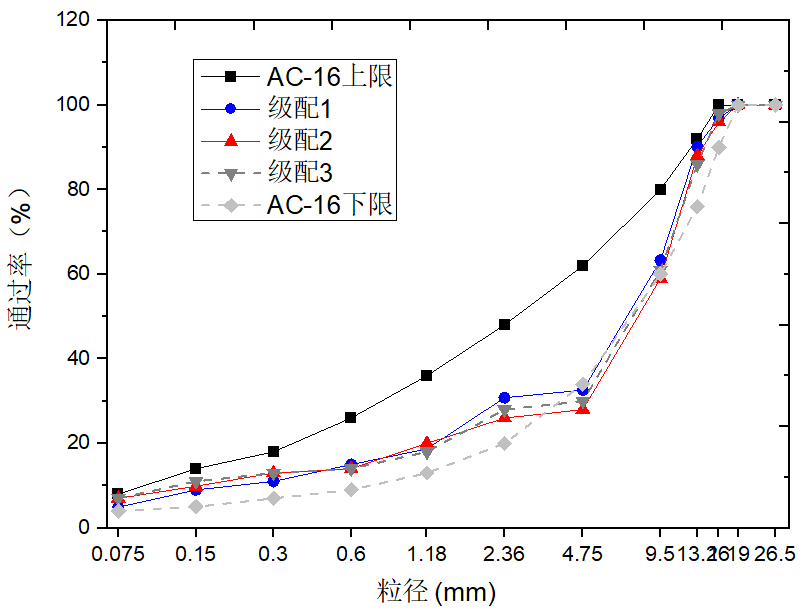

历史数据查看
摊铺轨迹监测
推荐级配：级配1，STI=0.642907，轻度离析

-
摊铺均匀性结果
-
设备状态监控
施工画面监控
摊铺温度：147°C 行进速度：3.1km/h 摊铺均匀性：96.8%
实时数据监测
| 桩号 | 摊铺温度(°C) | 行进速度(km/h) | 摊铺均匀性(%) | 状态 |
|---|---|---|---|---|
| 001 | 143 | 7.2 | 96.2 | 正常 |
| 002 | 143 | 12.8 | 94.8 | 正常 |
| 003 | 144 | 4.6 | 97.5 | 正常 |
| 004 | 145 | 9.1 | 93.9 | 正常 |
| 005 | 146 | 6.7 | 95.6 | 正常 |
| 006 | 147 | 14.3 | 98.1 | 正常 |
| 007 | 148 | 3.8 | 94.3 | 正常 |
| 008 | 147 | 11.5 | 96.8 | 正常 |
| 009 | 146 | 8.9 | 97.2 | 正常 |
| 010 | 145 | 5.4 | 95.9 | 正常 |
| 011 | 144 | 13.7 | 94.7 | 正常 |
| 012 | 143 | 2.1 | 96.4 | 正常 |
| 013 | -- | -- | -- | 维护 |
施工进度监控
质量评估分析